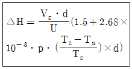
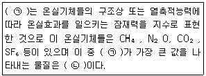
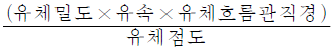
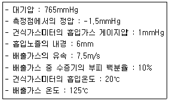
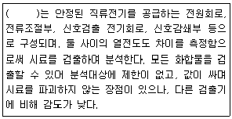
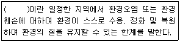
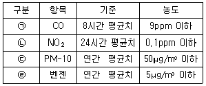

1과목: 대기오염 개론
1. 굴뚝 유효 높이를 3배로 증가시키면 지상 최대오염도는 어떻게 변화되는가? (단, Sutton식에 의함)
2. 체적이 100m3 인 복사실의 공간에서 오존 배출량이 분당 0.2mg인 복사기를 연속 사용하고 있다. 복사기 사용전의 실내 오존의 농도가 0.1ppm이라고 할 때 5시간 사용 후 오존농도는 몇 ppb인가? (단, 0℃, 1기압 기준, 환기는 고려하지 않음)
3. 2000m에서 대기압력(최초 기압)이 860 mbar, 온도가 5℃, 비열비 K가 1.4일 때 온위(potential temperature)는? (단, 표준 압력은 1000 mbar)
4. 내경이 2m 이고 실제높이가 45m 인 연돌에서 15m/s로 배출되는 배기가스의 온도는 127℃, 대기중의 공기압은 1기압, 기온은 27℃이다. 연돌 배출구에서의 풍속이 5m/s 일 때, 유효연돌 높이는? (단, Holland의 연기 상승 높이 결정식은 다음과 같다)

5. 다음 중 지표부근 대기 중에서 성분함량이 가장 낮은 것은?
6. 역사적으로 유명한 대기오염사건 중 LA smog 사건에 대한 설명으로 옳지 않은 것은?
7. 광화학물질인 PAN에 관한 설명으로 옳지 않은 것은?
8. 지상에서부터 600m까지의 평균기온감율은 0.88℃ /100m이다. 100m 고도에서의 기온이 20℃ 라면 300m에서의 기온은?
9. 스테판-볼쯔만의 법칙에 의하면 표면온도가 1500K에서 1800K가 되었다면 흑체에서 복사되는 에너지는 약 몇 배가 되는가?
10. 다음 중 오존층 보호를 위한 국제환경협약으로만 옳게 연결된 것은?
11. 파장이 5240Å인 빛 속에서 상대습도가 70% 이하인 경우 밀도가 1700mg/cm3이고, 직경이 0.4μm인 기름방울의 분산면적비가 4.5일 때, 가시거리가 959m 이라면 먼지농도(mg/m3)는?
12. 오존(O3)의 특성과 광화학반응에 관한 설명으로 가장 거리가 먼 것은?
13. 지표 부근의 대기의 일반적인 체류시간의 순서로 가장 적합한 것은?
14. 바람을 일으키는 힘 중 전향력에 관한 설명으로 가장 거리가 먼 것은?
15. 암모니아가 식물에 미치는 영향으로 가장 거리가 먼 것은?
16. 대기오염물의 분산과정에서 최대혼합깊이(Maximum mixing depth)를 가장 적합하게 표현한 것은?
17. 다음 중 석면의 구성성분과 거리가 먼 것은?
18. 석면폐증에 관한 설명으로 가장 거리가 먼 것은?
19. 질소산화물(NOx)에 관한 설명으로 옳지 않은 것은?
20. 다음은 지구온난화와 관련된 설명이다. ( )안에 알맞은 것은?

2과목: 연소공학
21. 미분탄 연소장치에 관한 설명으로 옳지 않은 것은?
22. 다음 중 연소와 관련된 설명으로 가장 적합한 것은?
23. 분자식 CmHn인 탄화수소 1Sm3를 완전연소 시 이론공기량이 19Sm3 인 것은?
24. 유류버너 중 회전식버너에 관한 설명으로 옳지 않은 것은?
25. 액화석유가스(LPG)에 관한 설명으로 옳지 않은 것은?
26. 탄소, 수소의 중량 조성이 각각 86%, 14%인 액체연료를 매시 30kg 연소한 경우 배기가스의 분석치가 CO2 12.5%, O2 3.5%, N2 84% 이라면 매시간 필요한 공기량(Sm3/hr)은?
27. 기체연료의 일반적 특징으로 가장 거리가 먼 것은?
28. 과잉공기가 지나칠 때 나타나는 현상으로 거리가 먼 것은?
29. 다음 중 저온부식의 원인과 대책에 관한 설명으로 가장 거리가 먼 것은?
30. 연소의 종류에 관한 설명으로 옳지 않은 것은?
31. 착화온도에 관한 설명으로 옳지 않은 것은?
32. 다음 기체연료 중 고위발열량(KJ/mol)이 가장 큰 것은? (단, 25℃, 1atm을 기준으로 한다.)
33. 다음 조건에서의 메탄의 이론연소 온도는? (단, 메탄, 공기는 25℃에서 공급되며, CO2, H2O(g), N2의 평균정압 몰비열(상온~2100℃)은 각각 13.1, 10.5, 8.0[kcal/kmol·℃]이고, 메탄의 저위발열량은 8600[kcal/Sm3]
34. 탄소 85%, 수소 15%의 구성비를 갖는 중유를 연소할 때 CO2max(%)는 얼마인가? (단, 공기비는 1.1이다.)
35. 수소 수분 8%, 2%가 포함된 고체연료의 고위발열량이 8000kcal/kg 일 때 이 연료의 저위발열량은?
36. 연료연소 시 매연발생에 관한 설명으로 옳지 않은 것은?
37. 화학반응속도는 일반적으로 Arrhenius식으로 표현된다. 어떤 반응에서 화학반응상수가 27℃일 때에 비하여 77℃일 때 3배가 되었다면 이 화학반응의 활성화 에너지는?
38. 다음 연료별 이론공기량(A0, Sm3/Sm3)이 가장 큰 것은?
39. 다음 연료 중 착화온도가 가장 높은 것은?
40. 탄소 84.0%, 수소 13.0%, 황 2.0%, 질소 1.0%의 조성을 가진 중유 1kg 당 15Sm3의 공기로 완전연소 할 경우 습배출가스 중 SO2의 농도(ppm)는? (단, 표준상태기준, 중유중의 황성분은 모두 SO2로 된다.)
3과목: 대기오염 방지기술
41. 휘발성유기화합물(VOCs)의 배출량을 줄이도록 요구받을 경우 그 저감방안으로 가장 거리가 먼 것은?
42. 충전탑(Packed tower) 내 충전물이 갖추어야할 조건으로 적절하지 않은 것은?
43. 레이놀드 수(Reynold Number)에 관한 설명으로 옳지 않은 것은? (단, 유체흐름 기준)

로 나타낼 수 있다.44. 전기집진장치에서 먼지의 전기비저항이 높은 경우 전기비저항을 낮추기 위해 주입하는 물질과 거리가 먼 것은?
45. 물을 가압(加壓) 공급하여 함진가스를 세정하는 형식의 가압수식 스크러버가 아닌 것은?
46. 송풍기의 크기와 유체의 밀도가 일정할 때 송풍기의 회전수를 2배로 하면 풍압은 몇 배가 되는가?
47. 공기 중 CO2 가스의 부피가 5%를 넘으면 인체에 해롭다고 한다면, 지금 600m3되는 방에서 문을 닫고 80%의 탄소를 가진 숯을 최소 몇 kg을 태우면 해로운 상태로 되겠는가? (단, 기존의 공기 중 CO2 가스의 부피는 고려하지 않음, 실내에서 완전혼합, 표준상태 기준)
48. 유해가스와 물이 일정한 온도에서 평형상태에 있다. 기상의 유해가스의 분압이 40mmHg일 때 수중가스의 농도가 16.5kmol/m3 이다. 이 경우 헨리 정수(atm·m3/kmol)는 약 얼마인가?
49. 전기집진장치에서 전류밀도가 먼지층 표면부근의 이온전류 밀도와 같고 양호한 집진작용이 이루어지는 값이 2×10-8A/cm2 이며, 또한 먼지 층 중의 절연파괴 전계강도를 5×103 V/cm로 한다면, 이 때 ㉠ 먼지층의 겉보기 전기저항과 ㉡ 이 장치의 문제점으로 옳은 것은?
50. 황산화물 처리방법 중 건식 석회석 주입법에 관한 설명으로 옳지 않은 것은?
51. 후드의 형식 중 외부식 후드에 해당하지 않는 것은?
52. 다음 여과재의 재질 중 내산성 여과재로 적합하지 않은 것은?
53. 유해가스 흡수장치 중 다공판탑에 관한 설명으로 옳지 않은 것은?
54. 길이 5m, 높이 2m인 중력침강실이 바닥을 포함하여 8개의 평행판으로 이루어져 있다, 침강실에 유입되는 분진가스의 유속이 0.2m/s 일 때 분진을 완전히 제거할 수 있는 최소입경은 얼마인가? (단, 입자의 밀도는 1600kg/m3, 분진가스의 점도는 2.1×10-5 kg/m·s, 밀도는 1.3kg/m3이고 가스의 흐름은 층류로 가정한다.)
55. 지름 20cm, 유효높이 3m, 원통형 Bag Filter로 4m3/s의 함진가스를 처리하고자 한다. 여과속도를 0.04m/s로 할 경우 필요한 Bag Filter수는 얼마인가?
56. NOX와 SOx 동시 제어기술에 대한 설명으로 옳지 않은 것은?
57. 벤튜리스크러버의 특성에 관한 설명으로 옳지 않은 것은?
58. 중력식 집진장치의 집진율 향상조건에 관한 설명 중 옳지 않은 것은?
59. 배출가스 중의 질소산화물의 처리방법인 비선택적 촉매환원법 에서 (NSCR) 사용하는 환원제로 거리가 먼 것은?
60. 전기집진장치에서 입자가 받는 Coulomb힘(kg·m/s2)을 옳게 나타낸 것은? (단, e0:전하(1.602×10-19 Coulomb), n : 전하수, E : 하전부의 전계 강도(Volt/m), μ: 가스점도(kg/m·s), D: 입자직경(m), Ve: 입자분리속도(m/s))
4과목: 대기오염 공정시험기준(방법)
61. 황성분 1.6% 이하 함유한 액체연료를 사용하는 연소시설에서 배출되는 황산화물(표준산소농도를 적용받는 항목)의 실측농도측정 결과 741ppm이었고, 배출가스 중의 실측산소농도는 7%, 표준산소농도는 4%이다. 황산화물의 농도(ppm)는 약 얼마인가?
62. 전자 포획 검출기(ECD)에 관한 설명으로 옳지 않은 것은?
63. 흡광차분광법 (Dfferenrial Optical Absorption Spectroscopy)에 관한 설명으로 옳지 않은 것은?
64. 이온크로마토그래피의 일반적인 장치 구성순서로 옳은 것은?
65. 자외선/가시선 분광법에서 미광(Stray light)의 유무조사에 사용되는 것은?
66. 굴뚝 배출가스 중 먼지를 보통형(1형) 흡입노즐을 이용할 때 등속흡입을 위한 흡입량(L/min)은?

67. 다음 중 자외선/가시선 분광법에서 흡광도를 측정하기 위한 순서로써 원칙적으로 제일 먼저 행하여야 할 행위는?
68. 굴뚝 배출가스 중 암모니아의 인도페놀 분석방법으로 옳지 않은 것은?
69. 굴뚝 배출가스상 물질의 시료채취방법으로 옳지 않은 것은?
70. 환경대기 중의 각 항목별 분석방법의 연결로 옳지 않은 것은?
71. 굴뚝 배출가스 중 암모니아의 중화적정 분석방법에 관한설명으로 옳은 것은?(관련 규정 개정전 문제로 여기서는 기존 정답인 1번을 누르면 정답 처리됩니다. 자세한 내용은 해설을 참고하세요.)
72. 휘발성유기화합물 누출확인에 사용되는 휴대용 VOCs 측정기기에 관한 설명으로 옳지 않은 것은?
73. 굴뚝 배출가스 중 브롬화합물 분석에 사용되는 흡수액으로 옳은 것은?
74. 굴뚝배출가스 중 벤젠을 분석하고자 할 때, 사용하는 채취관이나 도관의 재질로 적절하지 않는 것은?
75. 원자흡수분광광도법에 사용되는 용어설명으로 옳지 않은 것은?
76. 굴뚝 배출가스 중 아황산가스 자동연속측정방법에서 사용하는 용어의 의미로 가장 적합한 것은?
77. 환경대기 중의 석면농도를 측정하기 위해 멤브레인 필터에 포집한 대기부유먼지 중의 석면 섬유를 위상차현미경을 사용하여 계수하는 방법에 관한 설명으로 옳지 않은 것은?
78. 굴뚝 단면이 원형이고 , 굴뚝 직경이 3m인 경우 배출가스먼지 측정을 위한 측정점 수는?
79. 다음은 기체크로마토그래피에 사용되는 검출기에 관한 설명이다. ( ) 안에 가장 적합한 것은?

80. 연료용 유류 중의 황 함유량을 측정하기 위한 분석 방법은?
5과목: 대기환경관계법규
81. 환경정책기본법상 용어의 정의 중 ( )안에 가장 적합한 것은?

82. 대기환경보전법규상 휘발유를 연료로 사용하는 “경자동차”의 배출가스 보증기간 적용기준으로 옳은 것은? (단, 2016년 1월 1일 이후 제작 자동차)
83. 환경정책기본법령상 아황산가스(SO2)의 대기환경기준(ppm)으로 옳은 것은? (단, ㉠ 연간, ㉡ 24시간, ㉢ 1시간의 평균치 기준)
84. 대기환경보전법규상 배출시설 등의 가동개시 신고와 관련하여 환경부령으로 정하는 시운전 기간은?
85. 대기환경보전법규상 「의료법」에 따른 의료기관의 배출시설 등에 조업정지 처분을 갈음하여 과징금을 부과하고자 할 때, “2종사업장”의 규모별 부과계수로 옳은 것은?
86. 대기환경보전법규상 측정기기의 부착·운영 등과 관련된 행정처분기준 중 굴뚝 자동측정기기의 부착이 면제된 보일러(사용연료를 6개월 이내에 청정연료로 변경할 계획이 있는 경우)로서 사용연료를 6월이내에 청정연료로 변경하지 아니한 경우의 4차 행정처분기준으로 가장 적합한 것은?
87. 대기환경보전법령상 대기배출시설의 설치허가를 받고자 하는 자가 제출해야 할 서류목록에 해당하지 않는 것은?
88. 악취방지법규상 악취검사기관의 준수사항 중 실험일지 및 검량선 기록지, 검사 결과 발송 대장, 정도관리 수행기록철 등의 보존기간으로 옳은 것은?
89. 대기환경보전법령상 초과부과금 산정기준에서 오염물질 1킬로그램당 부과금액이 가장 낮은 것은?
90. 대기환경보전법규상 휘발성유기화합물 배출 억제· 방지 시설 설치 및 검사·측정결과의 기록보존에 관한 기준 중 주유소 주유시설 기준으로 옳지 않은 것은?
91. 대기환경보전법상 사업자는 조업을 할 때에는 환경부령으로 정하는 바에 따라 배출시설과 방지시설의 운영에 관한 상황을 사실대로 기록하여 보존하여야 하나 이를 위반하여 배출시설 등의 운영상황을 기록 · 보존하지 아니하거나 거짓으로 기록한 자에 대한 과태료 부과기준으로 옳은 것은?
92. 대기환경보전법규상 고체연료 환산계수가 가장 큰 연료(또는 원료명)는? (딴, 무연탄 환산계수 : 1.00, 단위 : kg 기준)
93. 대기환경보전법령상 일일 기준초과배출량 및 일일유량의 산정방법에 관한 설명으로 옳지 않은 것은?
94. 환경정책기본법령상 대기환경기준으로 옳지 않은 것은?

95. 실내공기질 관리법규상 “공동주택의 소유자”에게 권고하는 실내 라돈 농도의 기준으로 옳은 것은?(2021년 06월 11일 개정된 규정 적용됨)
96. 대기환경보전법상 환경부장관은 대기오염물질과 온실가스를 줄여 대기환경을 개선하기 위한 대기환경 개선 종합계획을 얼마마다 수립하여 시행하여야 하는가?
97. 대기환경보전법상 1년 이하의 징역이나 1천만원 이하의 벌금에 처하는 벌칙기준이 아닌 것은?
98. 악취방지법상 악취로 인한 주민의 건강상 위해 예방 등을 위해 기술진단을 실시하지 아니한 자에 대한 과태료 부과기준으로 옳은 것은?
99. 대기환경보전법규상 운행차 배출허용기준 중 일반기준으로 옳지 않은 것은?
100. 실내공기질 관리법규상 폼알데하이드의 신축 공동주택의 실내공기질 권고기준은?